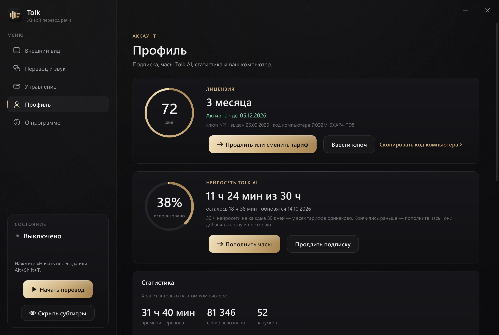

Tolk 3.0 · перевод в реальном времени
Лекция идёт по‑словацки. Субтитры — по‑русски.
Tolk слышит звук компьютера и через долю секунды показывает перевод поверх любого окна — лекции в Teams, записи на YouTube, фильма или созвона. Термины, сокращения и сленг переводит по смыслу.
30 минут Tolk AI бесплатно · без регистрации · Windows 10 и 11


Субтитры — настоящий кадр из Tolk 3.0, стиль «Графит». Слайд лекции — для примера.
Понимает университет, а не только слова.
Преподаватель говорит быстро, с терминами и шутками. Tolk AI знает, что zápočet — это зачёт, písomka — контрольная, а AIS — система с расписанием и оценками. Переводит по смыслу — как однокурсник, который давно тут учится.
Фильмы в оригинале. И язык — заодно.
Включите сериал без перевода — Tolk покажет две строки: перевод и оригинал. Слышите фразу, видите, как она пишется, понимаете смысл. Через месяц половину фраз вы поймёте раньше, чем прочитаете.

Шесть стилей — под фильм, лекцию и учёбу
Графит, Стекло, Классика, Кино, Жёлтые, Светлые. Размер и ширину меняете как удобно, место на экране — просто перетащите субтитры мышью.
Учите язык — оставьте оригинал под переводом. Нужна только суть — выключите его, и останется одна строка.

Слушает только то, что вы выбрали.
Вкладка с лекцией, Zoom, Teams, Webex, Discord — или весь звук компьютера. Уведомления, музыка в соседней вкладке и голосовые в мессенджере не мешают.
- 01Вкладка браузера. Chrome, Edge, Firefox, Opera — на Windows 11 без всяких расширений.
- 02Созвоны. Zoom, Microsoft Teams, Webex, Google Meet, Discord — выберите программу, и Tolk слышит только её.
- 03Горячие клавиши. Alt+Shift+T — включить или выключить перевод, Alt+Shift+H — спрятать субтитры.

Переводчик, который помнит, о чём речь.
Tolk AI держит в голове предыдущие фразы, поэтому падежи и роды сходятся, а начатая мысль не рвётся посередине. Сленг и крепкие словечки — нормальными словами вашего языка, имена и цифры — как есть.
Речь распознаётся у вас
Звук не уходит в интернет: распознавание работает прямо на компьютере. Для перевода отправляется только текст фразы.
Перевод — нейросеть Tolk AI
30 часов в месяц в любом тарифе. Кончились раньше — докупите пакет часов, а пока Tolk переводит через Google.
Перевод не пропадает
Пропала сеть — Tolk переводит встроенной моделью прямо на компьютере. Проще, но без пауз и пустого экрана.

Одна подписка. Всё включено.
Любой тариф — это весь Tolk и 30 часов Tolk AI на каждые 30 дней. Чем дольше срок, тем дешевле месяц.
Цены в гривнах и крипте — по курсу monobank и CoinGecko, округлены. Точная сумма — в боте.
Оплата — в Telegram
Кнопка «Купить» открывает нашего бота @TolkShopBot. Там же — продление, часы Tolk AI, ваши ключи и напоминание, когда подписка подходит к концу. Никаких автосписаний.
- 01Выберите тариф и способ оплаты.
- 02Звёздами Telegram — ключ приходит сразу. Картой или криптой — пришлите скриншот оплаты, проверка обычно до 15 минут.
- 03Ключ придёт в чат. Если открыли бота из Tolk — программа активируется сама.

Попробуйте на своей лекции.
Скачайте Tolk и нажмите «Попробовать бесплатно»: полчаса полной версии с Tolk AI. Без карты и регистрации — один раз на компьютер.